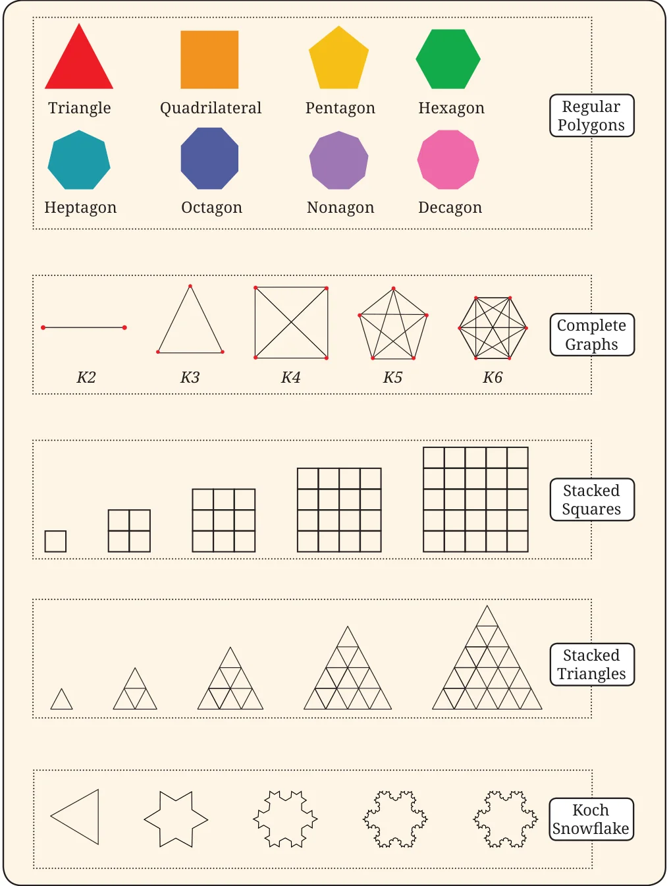

Other important and basic patterns that occur in Mathematics are patterns of shapes. These shapes may be in one, two, or three dimensions (1D, 2D, or \(3D) -\) or in even more dimensions. The branch of Mathematics that studies patterns in shapes is called geometry. Shape sequences are one important type of shape pattern that mathematicians study. Table 3 shows a few key shape sequences that are studied in Mathematics.
Table 3: Examples of shape sequences
